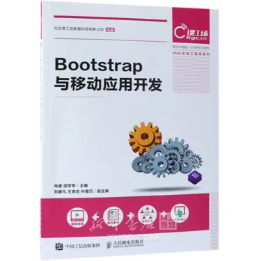
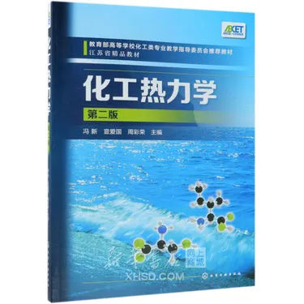

世界读书日
40 场门店分享会
新书速递
本周上新 128 册
专题推荐
国之重器 / 风物与人文 / 家庭阅读
Today's Editorial Picks
今日策展
把电商首页做成书展导览页，让每个专区都有明确主题和视觉重心。
把科学写得像诗，把工程写得像国家的脉搏。
《星耀中国》作为主推图书，适合承担首页视觉锚点，也能连接详情页放大镜交互。
查看主推详情风物与人文专题月
以城市、地方、人物为线索，重做首页卡片区的内容层级，让静态作业更像真实专题页。
适合假期带回家的六本书
文学、儿童、历史、自然与科学混排展示，强化策展感而不是单纯堆商品。
Shelf Components
主题书架
保持你原来的分类切换功能，但把内容卡片彻底重做成统一的书架组件。
 主推
主推
 工程
工程深部煤层群卸压开采应力场演化效应及工程应用
￥42.80￥55.90
 探索
探索未解之谜（下）
￥28.90￥38.99

实践Bootstrap 与移动应用开发
￥36.99￥49.99

教材化工热力学
￥38.90￥46.99
Reading Signals
本周榜单
用三列榜单增加门户感，也让首页有更多“像组件系统”的信息块。
畅销榜
- 01星耀中国（我们的量子科学）
- 02骆驼祥子
- 03傲慢与偏见
- 04化工热力学
豆瓣热议
- 01北流
- 02我是猫
- 03世说新语
- 04一日的春光
少儿精选
- 01给孩子的思维导图
- 02森林报
- 03少年中国地理
- 04名家写给童年的诗